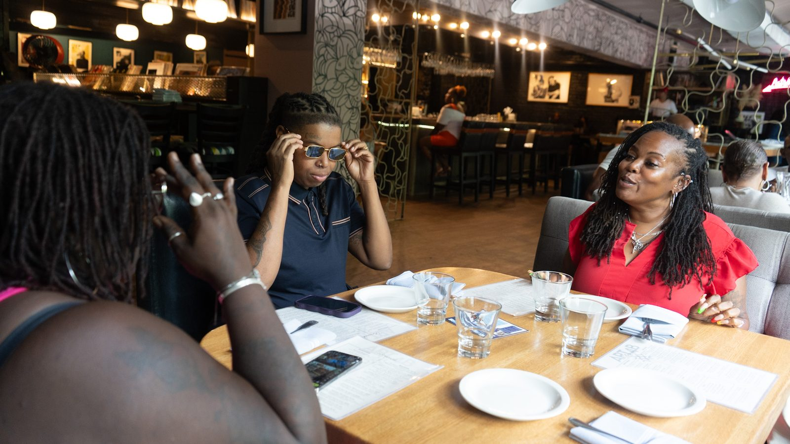
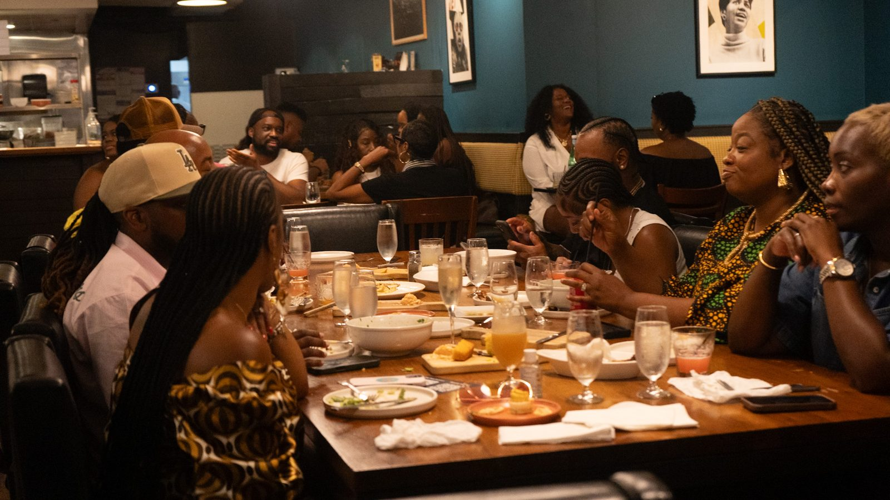
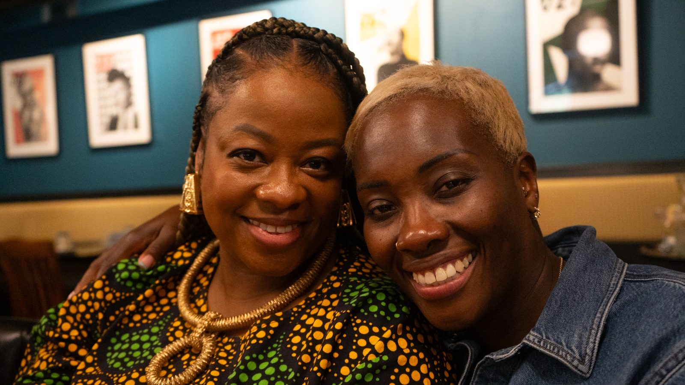
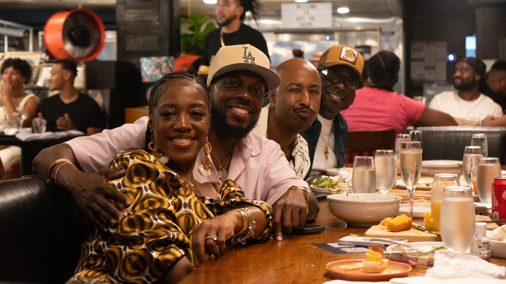
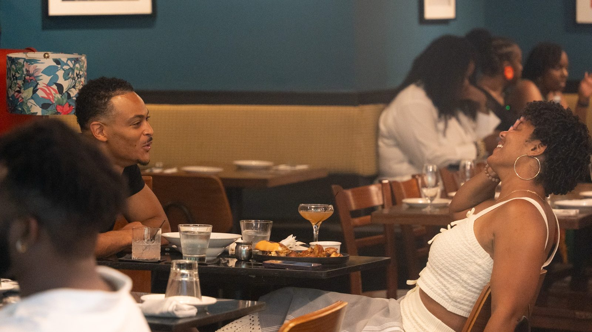
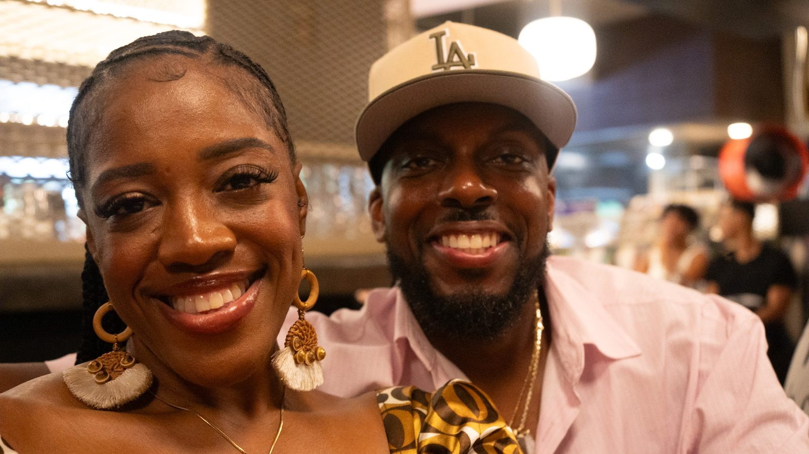

Brunch & Beats brought the Future Successors of ATL community together over food, music, and real conversation. Future Successors is an Atlanta-based nonprofit that pours into middle- and high-school scholars, building the entrepreneurship, leadership, and real-world skills that bridge the opportunity gap and set young people up for college, careers, and whatever they build next. This is the day on the wall: the room, the people, and the energy behind the mission.





The doors
The whole gallery → Own a frame from this shoot → Book a shoot like this →Photographed by Matthew McCluster for McCluster Corp, on assignment for Future Successors of ATL. matthew@mccluster.org